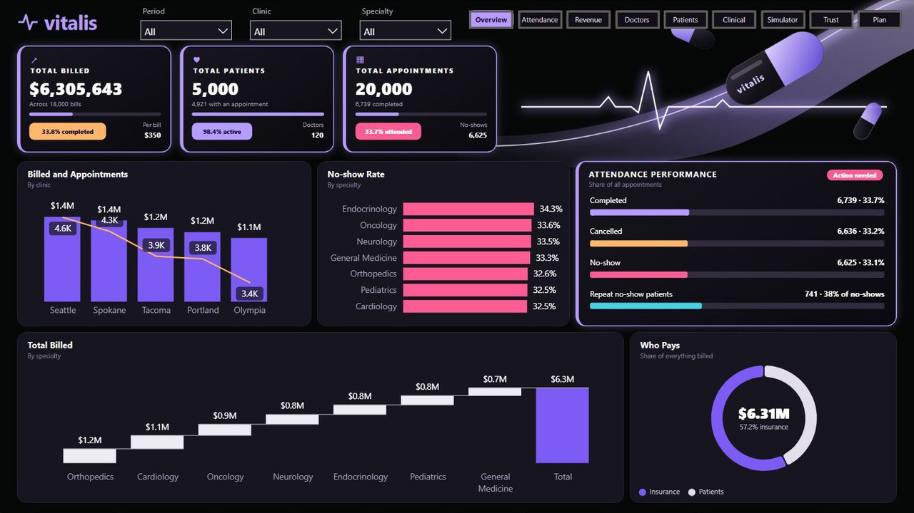
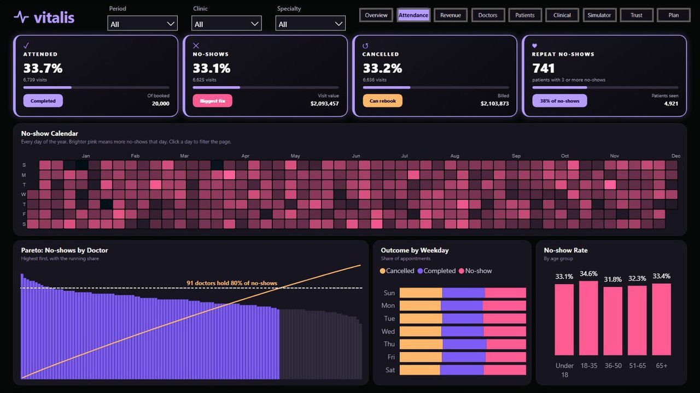
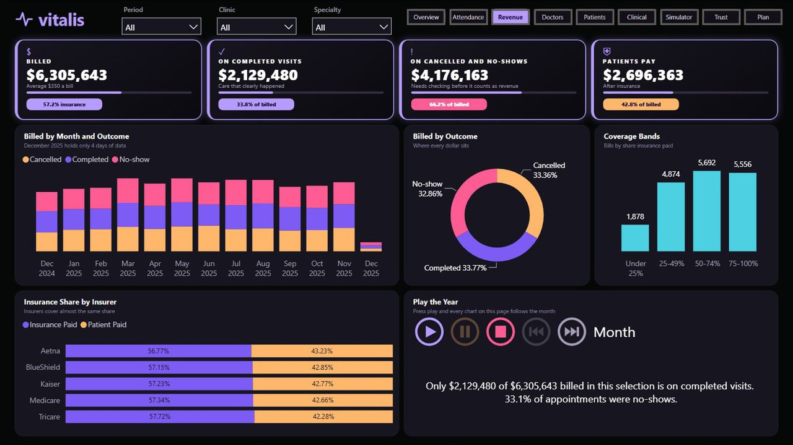
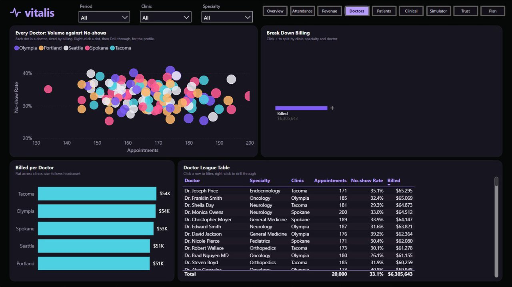
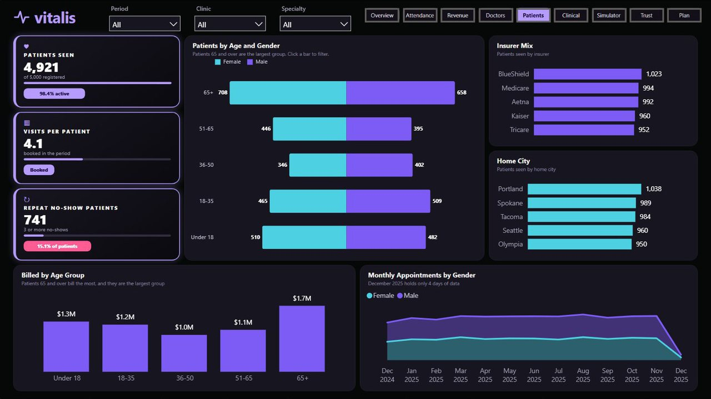
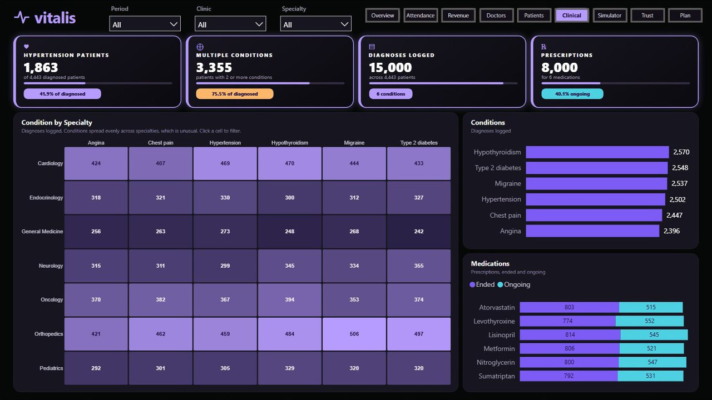
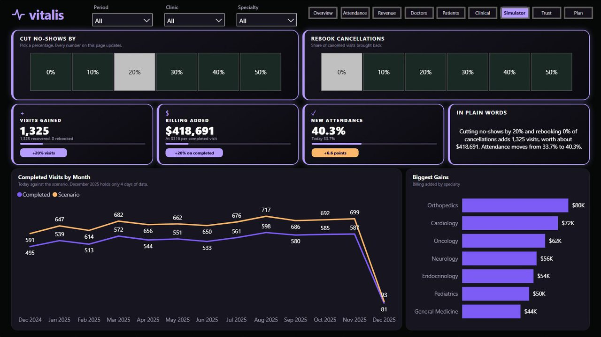
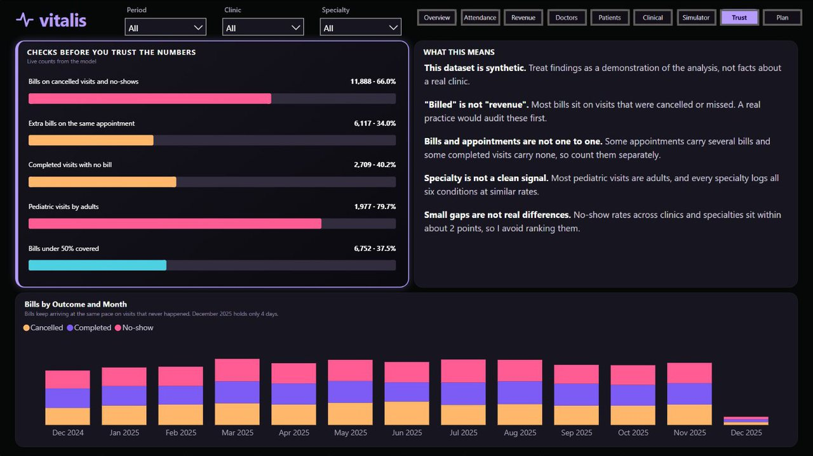
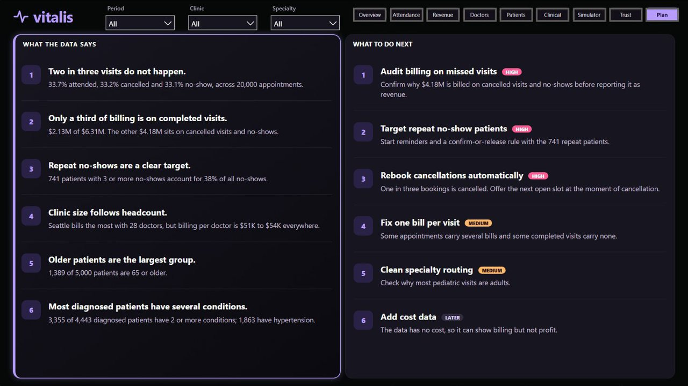

A nine-page Power BI report on five clinics, with a live simulator, built from raw tables. This is a screen recording of the report running in Power BI. Pick a page below to jump to it.
20,000appointments
$6.31Mbilled
33.7%attended
741repeat no-show patients
61DAX measures
What the report found
Two in three visits do not happen. 33.7% attended, 33.2% cancelled and 33.1% no-show.
Only a third of billing is on completed visits. $2.13M of $6.31M. The other $4.18M sits on cancelled visits and no-shows, so I report it as billed and flag it for audit.
Repeat no-shows are a clear target. 741 patients with three or more no-shows account for 38% of all no-shows.
Clinic size follows headcount. Seattle bills the most with 28 doctors, but billing per doctor is $51K to $54K everywhere.
Every page

1. Overview

2. Attendance

3. Revenue

4. Doctors

5. Patients

6. Clinical

7. Simulator

8. Data Trust

9. Findings and Plan
Built in Power BI with DAX, Power Query and Deneb by Bih Brandy Sango. The dataset is synthetic, so treat findings as a demonstration of the analysis.